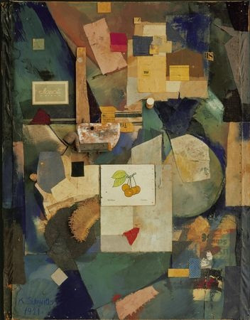
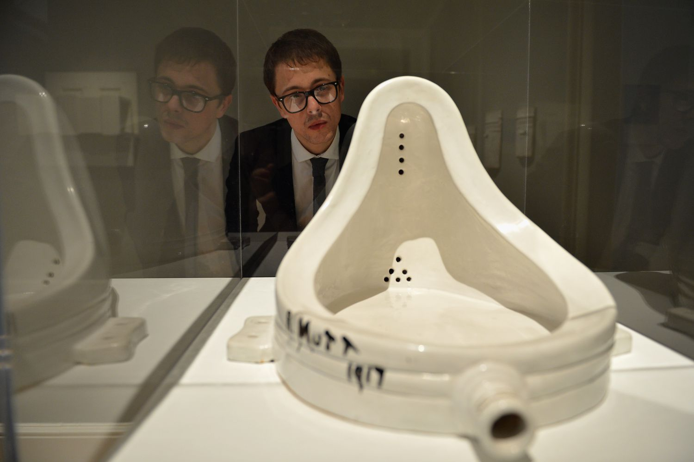

The Leaders
Kurt Schwitters (1887-1941)
Born in Hanover, Germany, Kurt’s story can be a clear-cut demonstration of what people of this time was going through and how their ideologies got formed through their experiences. Kurt, like many, was not exempt from Nazi Germany due to his beliefs and was forced to leave by being exiled in 1937. All his creations feature the word “Merz” which could mean many things, one meaning that stood out to me was it probably being a play on the word “Schmerz,” meaning pain in German. What is pictured below is named “Merz Pictures,” being one of Kurt’s earlier famous arts encapsulating the Dadaist movement. “Merz Building” is essentially a home that screams Dada, being a grotto of random materials and items that covered his first home in Germany. His last creation made after his exile in the Lake District, “Merz Barn,” still showcases his form of art even this late in his life.
 Kurt "Merz Barn"Marcel Duchamp (1887-1968)
Born in France, Marcel Duchamp is what I would describe as being very extreme in his ideals in Dada. He comes from a family of painters, and you can see the difference in his art as they were not “perfect,” almost having motion in his art per se. You can say all of them are extreme, but Duchamp is a very popular example with his most famous work, pictured below, “Fountain.” Even while learning about it myself I went, “That’s just a toilet isn’t it?” Duchamp wanted this reaction and excelled at making people look at art as a whole differently, whether they wanted to believe in it or not. His use of “readymades,” plain, everyday items we see all the time, while straightforward at times, are not limited to just being that. One example being “The Bride Stripped Bare by Her Bachelors, Even,” using foil, wire, and dust and two glass panels, Duchamp did not declare this work complete until it was damaged in transport.
 Duchamp MoMa